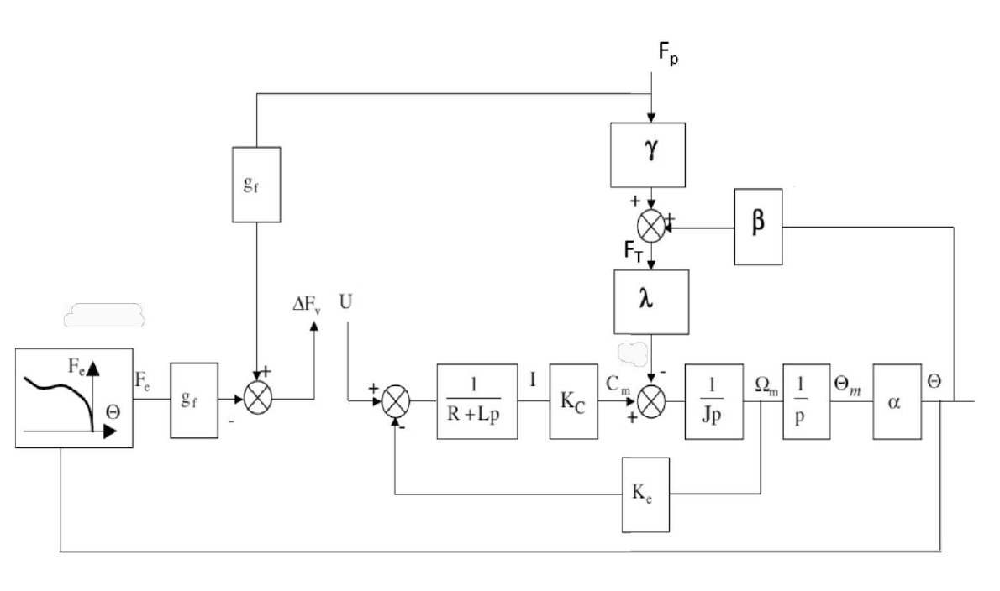

Chapitre C04 — Énergétique du solide
Énergie cinétique, inertie équivalente, puissance des actions mécaniques et des inter-efforts, théorème de l'énergie cinétique (TEC), rendement. Prérequis : C09 (comportement statique des transmetteurs). Source : S2I CM C04 — Énergétique du solide (11 p.) et S2I TD C04 (10 p.), tous deux image seule sur Moodle : le cours est retranscrit en texte et les énoncés des exercices sont en image.
Partie 1 — Cours
1. Historique, énergie, travail, puissance
L'énergie se conserve et se transforme (chaleur, pression, vitesse, hauteur…). Pour un système, l'énergie est ce qu'il faut lui fournir pour le faire passer d'un état initial à un état final : elle ne dépend pas du chemin. La puissance est le débit d'énergie à chaque instant ; elle dépend du mouvement.
Travail élémentaire d'une force : \(dW=\vec F\cdot d\vec\ell\) (en J). Pour un point matériel \(M\) de masse \(dm\) : \(W=\tfrac12\,dm\,V_{M\in S/R}^2\) entre deux instants (démonstration par le PFD).
2. Énergie cinétique d'un solide
Cas particuliers :
- \(A\) fixe dans \(R\) : \(2E_c=\vec\Omega\cdot\bar I_{(A,S)}\cdot\vec\Omega\).
- \(A=G\) : \(2E_c=m V_G^2+\vec\Omega\cdot\bar I_{(G,S)}\cdot\vec\Omega\).
- Translation : \(2E_c=m V_G^2\).
- Rotation autour d'un axe fixe \(\vec z\) : \(2E_c=J\omega^2\), avec \(J\) le moment d'inertie autour de \(\vec z\).
Ensemble de solides : \(E_{c(\Sigma/R)}=\sum_i E_{c(S_i/R)}\).
3. Inertie équivalente
Pour un système de pièces en rotation (et parfois en translation) à des vitesses différentes, on appelle inertie équivalente ramenée à l'axe \(\Delta\) l'inertie \(I_{eq\Delta}\) telle que \(2E_{c(\Sigma/R)}=I_{eq\Delta}\,\omega_\Delta^2\). Elle permet d'estimer rapidement le dimensionnement d'un actionneur.
4. Puissance d'une action extérieure
- Glisseur : \(P=\vec R\cdot\vec V_A\) ; couple : \(P=\vec C\cdot\vec\omega\).
- La puissance n'a de sens que par rapport à un repère : elle est nulle dans tout repère lié au solide sur lequel elle s'exerce.
5. Puissance des inter-efforts
- Si elle est négative, c'est une puissance perdue par frottement.
- Si la liaison entre \(S_1\) et \(S_2\) est parfaite, \(P_{S_1\leftrightarrow S_2}=0\).
6. Théorème de l'énergie cinétique (TEC)
Pour un ensemble \(E\) de \(n\) solides : \(\dfrac{d}{dt}\Big(\sum_i E_{c(S_i/R)}\Big)=\sum_i P_{\bar S_i\to S_i/R}\), soit \(\dfrac{dE_{c(E/R)}}{dt}=P_{\bar E\to E/R}+\sum_{i,j}P_{S_i\leftrightarrow S_j}\) : puissance des actions extérieures à chaque solide plus puissance des inter-efforts entre solides.
7. Notion de rendement
Une partie de l'énergie fournie est perdue (chaleur, frottements). Rendement : \(\eta=\dfrac{E_u}{E_{fournie}}=1-\dfrac{E_{perdue}}{E_{fournie}}\), compris entre 0 et 1. En régime établi, on raisonne en puissance : \(\eta=\dfrac{P_u}{P_{fournie}}\).
Partie 2 — Correction des exercices de TD
Exercices dans l'ordre du TD. Les exercices 1 à 4.1 suivent les corrigés de E. Bigeard (ENE-PT-TD-calcul_d_energie_cinetique-prof.pdf, ENE-PT-TD-calcul_d_inertie_equivalente-prof.pdf, ENE-PT-TD-calcul_de_puissance-prof.pdf, ENE-PT-TD-application_du_theoreme_de_l_energie_cinetique-prof.pdf). Les exercices 4.2, 5.1 et 5.2 n'ont pas de corrigé Bigeard : correction rédigée par nous, avec sa méthode. Chaque énoncé est une image, avec le titre de l'exercice dessous (Ctrl+F).
1. Calcul d'énergie cinétique

1) Énergie cinétique du cylindre, calcul en \(I\)
Étape 1 : la formule en \(I\)
\[ 2E_{c(S/R)} = \vec\Omega_{S/R}\cdot\vec\sigma_{I\in S/R} + m\,\vec V_{I\in S/R}\cdot\vec V_{G\in S/R} \]Roulement sans glissement en \(I\) : \(\vec V_{I\in S/R} = \vec 0\). Le second terme disparaît.
\[ 2E_{c(S/R)} = \vec\Omega_{S/R}\cdot\vec\sigma_{I\in S/R} \qquad \vec\Omega_{S/R} = \dot\theta\,\vec z \]Étape 2 : moment cinétique en \(I\)
\(\vec\sigma_G = \bar I_{(G,S)}\cdot\dot\theta\,\vec z = C\dot\theta\,\vec z\). Avec \(\overrightarrow{IG} = R\,\vec x\) et \(\vec V_G = R\dot\theta\,\vec y\) :
\[ R\,\vec x\wedge mR\dot\theta\,\vec y = mR^2\dot\theta\,\vec z \qquad\Longrightarrow\qquad \vec\sigma_{I} = (C + mR^2)\,\dot\theta\,\vec z \]Étape 3 : cylindre plein
\[ C = \frac{mR^2}{2} \qquad \vec\sigma_I = \frac32 mR^2\dot\theta\,\vec z \]2) Même calcul en \(G\)
En \(G\), la formule devient \(2E_c = m\,V_G^2 + \vec\Omega\cdot\vec\sigma_G\) :
\[ 2E_c = mR^2\dot\theta^2 + C\dot\theta^2 = mR^2\dot\theta^2 + \frac12 mR^2\dot\theta^2 \]

3) Énergie cinétique de la toupie
Étape 1 : la formule au point fixe \(O\)
\(O\) reste immobile : \(\vec V_{O\in S/R} = \vec 0\). Donc :
\[ 2E_{c(S/R)} = \vec\Omega_{S/R}\cdot\vec\sigma_{O\in S/R} = \vec\Omega_{S/R}\cdot\bar I_{(O,S)}\cdot\vec\Omega_{S/R} \]Étape 2 : le vecteur rotation
On l'exprime dans la 2ᵉ base intermédiaire \((\vec u,\vec w,\vec z_1)\), avec \(\vec z = \sin\theta\,\vec w + \cos\theta\,\vec z_1\) :
\[ \vec\Omega_{S/R} = \dot\theta\,\vec u + \dot\psi\sin\theta\,\vec w + (\dot\varphi + \dot\psi\cos\theta)\,\vec z_1 \]La matrice \(\mathrm{diag}(A, A, C)\) reste la même dans cette base, car la toupie est de révolution autour de \(\vec z_1\).
Étape 3 : le produit
\[ 2E_c = A\dot\theta^2 + A\dot\psi^2\sin^2\theta + C(\dot\varphi + \dot\psi\cos\theta)^2 \]2. Calcul d'inertie équivalente

1) Énergie cinétique de \(\Sigma = \{1+2+3\}\) par rapport à 0
Étape 1 : additivité
Étape 2 : tout exprimer avec \(\omega_1\)
Engrenages extérieurs : sens de rotation inversé à chaque étage.
\[ \frac{\omega_2}{\omega_1} = -\lambda \qquad \frac{\omega_3}{\omega_2} = -\mu \qquad\Longrightarrow\qquad \omega_2 = -\lambda\omega_1,\quad \omega_3 = \lambda\mu\,\omega_1 \]2) Inertie équivalente ramenée à l'axe moteur
Chaque inertie est multipliée par le carré du rapport de vitesse qui la relie au moteur. Les signes disparaissent au carré.

3) Énergie cinétique de \(\Sigma = \{1+2\}\) par rapport à 0
- Pignon 1, rotation autour d'un axe fixe : \(E_{c(1/0)} = \dfrac12 J\omega^2\).
- Table 2, translation à la vitesse \(v\) : \(E_{c(2/0)} = \dfrac12 Mv^2\).
4) Inertie équivalente ramenée à l'axe moteur
Une masse \(M\) en translation « pèse » \(MR^2\) sur l'arbre du pignon de rayon primitif \(R\).
3. Calcul de puissance

1) Puissance des inter-efforts \(P_{S_1\leftrightarrow S_2}\)
Étape 1 : la définition
Elle ne dépend pas du repère : on la calcule dans le mouvement relatif \(S_2/S_1\) (le terme \(\{\mathcal T_{S_2\to S_1}\}\otimes\{\mathcal V_{S_1/S_1}\}\) est nul).
Étape 2 : le comoment en \(A\)
Le torseur de contact a un moment nul en \(A\) :
\[ P_{S_1\leftrightarrow S_2} = \vec F_{S_1\to S_2}\cdot\vec V_{A\in S_2/S_1} = (\vec T + \vec N)\cdot\vec V_{A\in S_2/S_1} \]Étape 3 : simplification
La vitesse de glissement est dans le plan tangent : \(\vec N\cdot\vec V_{A\in S_2/S_1} = 0\).
Le frottement s'oppose au glissement : \(\vec T\) et \(\vec V_A\) sont opposés, le produit est négatif. On retrouve la formule du cours.

2) Puissance des inter-efforts
Étape 1 : les deux torseurs en \(A\)
\[ \{\mathcal T_{2\to1}\} = \left\{\begin{array}{cc} 0 & 0\\ Y_A & M_A\\ Z_A & N_A \end{array}\right\}_{A} \qquad \{\mathcal V_{1/2}\} = \left\{\begin{array}{cc} \omega_x & V_x\\ 0 & 0\\ 0 & 0 \end{array}\right\}_{A} \]Étape 2 : le comoment
\[ P_{1\leftrightarrow2} = \vec R\cdot\vec V_A + \vec M_A\cdot\vec\Omega = (0\cdot V_x + Y_A\cdot0 + Z_A\cdot0) + (0\cdot\omega_x + M_A\cdot0 + N_A\cdot0) = 0 \]Chaque composante d'effort non nulle correspond à un mouvement bloqué, et inversement : les produits sont tous nuls.
4. Application du théorème de l'énergie cinétique

1) Accélération angulaire par le TEC
Étape 1 : énergie cinétique (exercice 1.1)
\[ E_{c(S/R)} = \frac34 mR^2\dot\theta^2 \qquad \frac{dE_c}{dt} = \frac32 mR^2\dot\theta\ddot\theta \]Étape 2 : puissances extérieures
- Poids : \(P_{pes} = -mg\,\vec x_0\cdot R\dot\theta\,\vec y = mgR\dot\theta\sin\alpha\) (le cylindre descend).
- Sol, en \(I\) : \(P_{sol} = \vec R\cdot\vec V_{I\in S/R} = 0\), car \(\vec V_{I\in S/R} = \vec 0\) (roulement sans glissement).
Étape 3 : le TEC
\[ \frac32 mR^2\dot\theta\ddot\theta = mgR\dot\theta\sin\alpha \]2) Retrouver ce résultat par le PFD
Étape 1 : actions extérieures, réduites en \(G\)
On note \(f\) le rapport \(T/N\) nécessaire au contact (inconnu).
\[ \{\mathcal T_{pes\to S}\} = \left\{\begin{array}{c} -mg\,\vec x_0\\ \vec 0\end{array}\right\}_G \qquad \{\mathcal T_{sol\to S}\} = \left\{\begin{array}{c} N\,\vec x - fN\,\vec y\\ RfN\,\vec z\end{array}\right\}_G \]Étape 2 : torseur dynamique en \(G\)
\[ \{\mathcal D_{S/R}\} = \left\{\begin{array}{c} mR\ddot\theta\,\vec y\\ \frac12 mR^2\ddot\theta\,\vec z\end{array}\right\}_G \]Étape 3 : les équations (problème plan)
\[ -mg\cos\alpha + N = 0 \qquad mg\sin\alpha - fN = mR\ddot\theta \qquad RfN = \frac12 mR^2\ddot\theta \]Étape 4 : on élimine \(fN\)
\[ R\left(mg\sin\alpha - mR\ddot\theta\right) = \frac12 mR^2\ddot\theta \quad\Longrightarrow\quad g\sin\alpha = \frac32 R\ddot\theta \]On en tire aussi \(f = \dfrac{g\sin\alpha - R\ddot\theta}{g\cos\alpha} = \dfrac{\tan\alpha}{3}\). Le roulement sans glissement n'est possible que si le coefficient de frottement vaut au moins \(\tan\alpha/3\) (calcul ajouté par nous).
Exercice 4.2 : correction rédigée par nous, pas de corrigé Bigeard.

1) Les cinq puissances
Étape 1 : les liaisons
- 0 sur 1, mouvement 1/0 : pivot parfait en \(O\), \(\vec V_{O\in1/0} = \vec 0\) et \(\vec M_O\cdot\vec z = 0\). Donc \(P = 0\).
- 1 sur 2, mouvement 2/0 : \(\vec M_A\cdot\vec z = 0\) (pivot parfait), et \(\vec V_{A\in2/0} = \vec V_{A\in1/0} = 2a\dot\alpha\,\vec y_1\). Donc \(P = 2a\dot\alpha\,\vec R_{1\to2}\cdot\vec y_1\), non nulle en général.
- 1 sur 2, mouvement 2/1 : \(\vec V_{A\in2/1} = \vec 0\) et \(\vec\Omega_{2/1} = (\dot\beta - \dot\alpha)\,\vec z\), avec \(\vec M_A\cdot\vec z = 0\). Donc \(P = 0\).
Étape 2 : la pesanteur
\(\vec g = g\,\vec x\), \(\vec x\cdot\vec y_1 = -\sin\alpha\), \(\vec x\cdot\vec y_2 = -\sin\beta\). Et \(\vec V_{G_1\in1/0} = a\dot\alpha\,\vec y_1\).
\[ P_{pes\to1/0} = mg\,\vec x\cdot a\dot\alpha\,\vec y_1 = -mga\,\dot\alpha\sin\alpha \] \[ P_{pes\to2/0} = mg\,\vec x\cdot\left(a\dot\beta\,\vec y_2 + 2a\dot\alpha\,\vec y_1\right) = -mga\left(\dot\beta\sin\beta + 2\dot\alpha\sin\alpha\right) \]2) Puissances extérieures ou d'inter-efforts
- On isole 2 : \(P_{1\to2/0}\) et \(P_{pes\to2/0}\) sont des puissances extérieures. Pas d'inter-effort (un seul solide).
- On isole \(\{1+2\}\) : \(P_{0\to1/0}\), \(P_{pes\to1/0}\), \(P_{pes\to2/0}\) sont extérieures. La liaison 1–2 est un inter-effort, de puissance \(P_{1\leftrightarrow2} = P_{1\to2/1} = 0\).
3) Énergie cinétique de la tige 2
Étape 1 : la formule en \(A\)
\[ 2E_{c(2/0)} = \vec\Omega_{2/0}\cdot\vec\sigma_{A\in2/0} + m\,\vec V_{A\in2/0}\cdot\vec V_{G_2\in2/0} \]Étape 2 : les deux termes
Avec \(\vec y_1\cdot\vec y_2 = \cos(\beta - \alpha)\) :
\[ \dot\beta\,\vec z\cdot\vec\sigma_{A\in2/0} = ma^2\left(\frac43\dot\beta^2 + 2\dot\alpha\dot\beta\cos(\beta - \alpha)\right) \] \[ m\,2a\dot\alpha\,\vec y_1\cdot\left(a\dot\beta\,\vec y_2 + 2a\dot\alpha\,\vec y_1\right) = ma^2\left(4\dot\alpha^2 + 2\dot\alpha\dot\beta\cos(\beta - \alpha)\right) \]4) Le TEC appliqué à 2 donne-t-il une équation du mouvement ?
Étape 1 : le TEC sur 2
\[ \frac{dE_{c(2/0)}}{dt} = 2a\dot\alpha\,\vec R_{1\to2}\cdot\vec y_1 - mga\left(\dot\beta\sin\beta + 2\dot\alpha\sin\alpha\right) \]Étape 2 : conclusion
L'équation contient l'inconnue de liaison \(\vec R_{1\to2}\cdot\vec y_1\). Ce n'est pas une équation du mouvement (qui ne doit contenir que \(\alpha\), \(\beta\) et leurs dérivées).
Pour aller plus loin (rédigé par nous) : le TEC sur \(\{1+2\}\) donne une équation du mouvement, car la liaison 1–2 a une puissance nulle. Avec \(E_{c(1/0)} = \frac12\,\frac{4ma^2}{3}\dot\alpha^2\) :
\[ \frac{d}{dt}\left[ma^2\left(\frac83\dot\alpha^2 + \frac23\dot\beta^2 + 2\dot\alpha\dot\beta\cos(\beta - \alpha)\right)\right] = -mga\left(3\dot\alpha\sin\alpha + \dot\beta\sin\beta\right) \]La seconde équation du mouvement demande un théorème du moment dynamique en \(A\) sur 2, autour de \(\vec z\).
5. Étude de cas
Exercices 5.1 et 5.2 : correction rédigée par nous, pas de corrigé Bigeard (aucun dossier « Duo Voyageur » ni « restituteur » ; le dossier « embrayage » de Bigeard porte sur un autre exercice).


1) Relation entre \(\omega_m\) et \(\omega_{10}\)
Étape 1 : roulement sans glissement en \(J\)
\(J\) est entre \(O\) et \(A\), avec \(\overrightarrow{AJ} = -r_2\,\vec x_1\). On écrit \(\vec V_{J\in2/0} = \vec 0\).
Étape 2 : les termes
- \(A\) est sur l'axe de la pivot 2/1 : \(\vec V_{A\in2/0} = \vec V_{A\in1/0} = \omega_{10}\,\vec z_0\wedge(r_0 + r_2)\,\vec x_1 = (r_0 + r_2)\,\omega_{10}\,\vec y_1\).
- \(\vec\Omega_{2/0} = \vec\Omega_{2/1} + \vec\Omega_{1/0} = (\omega_m + \omega_{10})\,\vec z_0\), donc \(\vec\Omega_{2/0}\wedge\overrightarrow{AJ} = -r_2(\omega_m + \omega_{10})\,\vec y_1\).
2) Accélération angulaire du bras par le TEC, inertie \(I_{eq}\)
Étape 1 : système isolé et énergie cinétique
On isole \(\Sigma = \{1 + 2\}\) dans son mouvement par rapport à 0.
\[ 2E_{c(\Sigma/0)} = I_1\,\omega_{10}^2 + m_2\,V_{G_2}^2 + I_2\,\Omega_{20}^2 \qquad V_{G_2} = (r_0 + r_2)\,\omega_{10} \qquad \Omega_{20} = \omega_m + \omega_{10} = \frac{r_0 + r_2}{r_2}\,\omega_{10} \] \[ E_{c(\Sigma/0)} = \frac12\,I_{eq}\,\omega_{10}^2 \qquad I_{eq} = I_1 + m_2(r_0 + r_2)^2 + I_2\left(\frac{r_0 + r_2}{r_2}\right)^2 \]Étape 2 : puissances
- Pivot 0–1 parfaite : 0.
- Contact 0–2 en \(J\) : 0, car \(\vec V_{J\in2/0} = \vec 0\).
- Pesanteur : 0, les centres de gravité restent à la même hauteur.
- Moteur (inter-effort entre stator 1 et rotor 2) : \(P = C\,\omega_{21} = C\,\omega_m = C\,\dfrac{r_0}{r_2}\,\omega_{10}\).
- Pivot 1–2 parfaite : 0.
Étape 3 : le TEC
\[ I_{eq}\,\omega_{10}\,\dot\omega_{10} = C\,\frac{r_0}{r_2}\,\omega_{10} \quad\Longrightarrow\quad \dot\omega_{10} = \frac{r_0}{r_2}\,\frac{C}{I_{eq}} = \frac{2\times40}{270} \]3) Vérifier le critère de durée d'accélération
Étape 1 : vitesse nominale en rad/s
\[ \omega_{nom} = 3\ \text{tr/min} = \frac{3\times2\pi}{60} \approx 0{,}314\ \text{rad/s} \]Étape 2 : durée à accélération constante (loi en trapèze)
\[ t_a = \frac{\omega_{nom}}{\dot\omega_{10}} = \frac{0{,}314}{0{,}296} \approx 1{,}06\ \text{s} \]



1) Action \(C_{R_0}\) du ressort pour l'équilibre en \(\theta = 0\)
Étape 1 : conventions lues sur la figure
- \(\vec x\) sort de la feuille : un moment positif fait tourner la pédale dans le sens trigonométrique.
- \(\theta\) est compté dans le sens horaire (pédale enfoncée) : \(\vec\Omega_{pédale/0} = -\dot\theta\,\vec x\).
- \(\overrightarrow{OG}\) fait l'angle \(\varphi = \theta_0 - \alpha_G - \theta\) avec la verticale descendante.
Étape 2 : moments en \(O\) sur \(\vec x\)
- Poids \(-m_Pg\,\vec z\) en \(G\) : \(-m_P\,g\,r_G\sin\varphi\).
- Ressort : \(C_R = C_{R_0} - K_R\theta\).
- Pivot parfait en \(O\) : 0.
Étape 3 : équilibre en \(\theta = 0\), sans pied ni tige
2) Équation différentielle du mouvement de la pédale
Étape 1 : solide isolé, théorème
On isole la pédale, en rotation autour de l'axe fixe \((O,\vec x)\). On écrit le théorème du moment dynamique en \(O\) sur \(\vec x\) : les inconnues de la pivot disparaissent.
Étape 2 : bilan des moments
- Pied (\(-F_P\,\vec u\) en \(P\), \(\vec u\perp\overrightarrow{OP}\)) : \(-R_P\,F_P\).
- Tige (\(F_T\,\vec u\) en \(T\), inclinaison négligée) : \(+r_T\,F_T\).
- Ressort : \(C_{R_0} - K_R\theta\) ; poids : \(-m_Pgr_G\sin(\theta_0 - \alpha_G - \theta)\).
Étape 3 : l'équation
\[ -J_P\,\ddot\theta = r_T\,F_T - R_P\,F_P + C_{R_0} - K_R\theta - m_P\,g\,r_G\sin(\theta_0 - \alpha_G - \theta) \]3) Linéarisation autour de \(\theta = 0\)
Avec \(a = \theta_0 - \alpha_G\) et \(C_{R_0} = m_Pgr_G\sin a\), les termes constants s'annulent :
4) Équation du restituteur par le TEC
Étape 1 : hypothèses et solides isolés
On isole {rotor + poulie 1}, {poulie 2 + écrou}, {vis + piston} et la courroie (masse négligée). Liaisons parfaites, pas de frottement.
Étape 2 : la cinématique
- Poulie 2 de diamètre double : \(\omega_2 = \dfrac{\omega_m}{2}\).
- Vis-écrou de pas \(p_v\) : \(V_v = \dfrac{p_v}{2\pi}\,\omega_2 = \dfrac{p_v}{4\pi}\,\omega_m = \lambda\,\omega_m\), avec \(\lambda = \dfrac{p_v}{4\pi}\).
Étape 3 : énergie cinétique
\[ E_c = \frac12 J_m\omega_m^2 + \frac12 J_2\omega_2^2 + \frac12 M_vV_v^2 = \frac12\left(J_m + \frac{J_2}{4} + M_v\lambda^2\right)\omega_m^2 \]Étape 4 : puissances
- Couple moteur : \(C_m\,\omega_m\).
- Tige sur piston : \(-F_T\,\vec y\cdot V_v\,\vec y = -\lambda\,F_T\,\omega_m\).
- Liaisons parfaites, pesanteur (vis horizontale) : 0.
Étape 5 : le TEC
\[ J_{eq}\,\omega_m\,\dot\omega_m = C_m\,\omega_m - \lambda\,F_T\,\omega_m \]5) Constantes \(\gamma\), \(\beta\), \(\lambda\) et \(J\) du schéma-bloc
Étape 1 : la pédale sans inertie
On néglige \(J_P\) dans l'équation de la question 3 :
\[ 0 = R_P\,F_P - r_T\,F_T + K\,\theta \quad\Longrightarrow\quad F_T = \frac{R_P}{r_T}\,F_P + \frac{K}{r_T}\,\theta \]Étape 2 : identification avec le schéma-bloc
Le schéma-bloc donne \(F_T = \gamma\,F_P + \beta\,\Theta\) et \(J\,p\,\Omega_m = C_m - \lambda\,F_T\).
Remarque : le gain \(\alpha\) du schéma (\(\Theta = \alpha\,\Theta_m\)) n'est pas demandé. La tige impose environ \(r_T\,\theta = \lambda\,\theta_m\), d'où \(\alpha \approx \lambda/r_T\) au signe près.